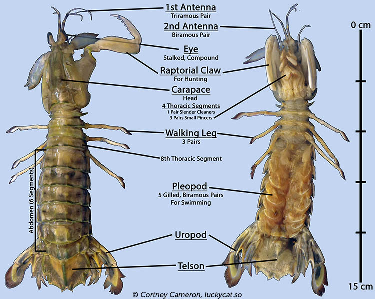

Fatos sobre o Stomatopoda
Classificação Científica
- Nome Científico: Odontodactylus scyllarus
- Reino: Animalia
- Filo: Arthropoda
- Subfilo: Crustacea
- Classe: Malacostraca
- Subclasse: Hoplocarida
- Ordem: Stomatopoda Latreille, 1817
Nomes conhecidos
Camarão mantis, camarão louva-a-Deus, camarão boxeador, camarão pistola, camarão de estalo, lacraia-do-mar e tamarutaca são alguns dos nomes comuns para o crustáceo marinho (muito parecido com um camarão, mas não é um camarão!) pertencente à ordem Stomatopoda.

Tamanho
Medindo cerca de 18 cm e habitando águas claras e rasas dos recifes, esse animal de colorido intenso é bastante apreciado no Aquarismo.
Soco
Excelente golpeador, o tamarutaca "soca" suas presas com suas garras com uma força de até 2,5 mil vezes seu peso em menos de 800 microsegundos. Este nocaute equivale a um tiro de pistola calibre 22.

Visão
Como se não bastasse, estes crustáceos apresentam a melhor visão em cores do mundo. Possuindo 08 fotorreceptores para distinção de cores (humanos possuem 03), conseguem detectar ondas ultravioleta e milhares de gradações (até 16 cores primárias).